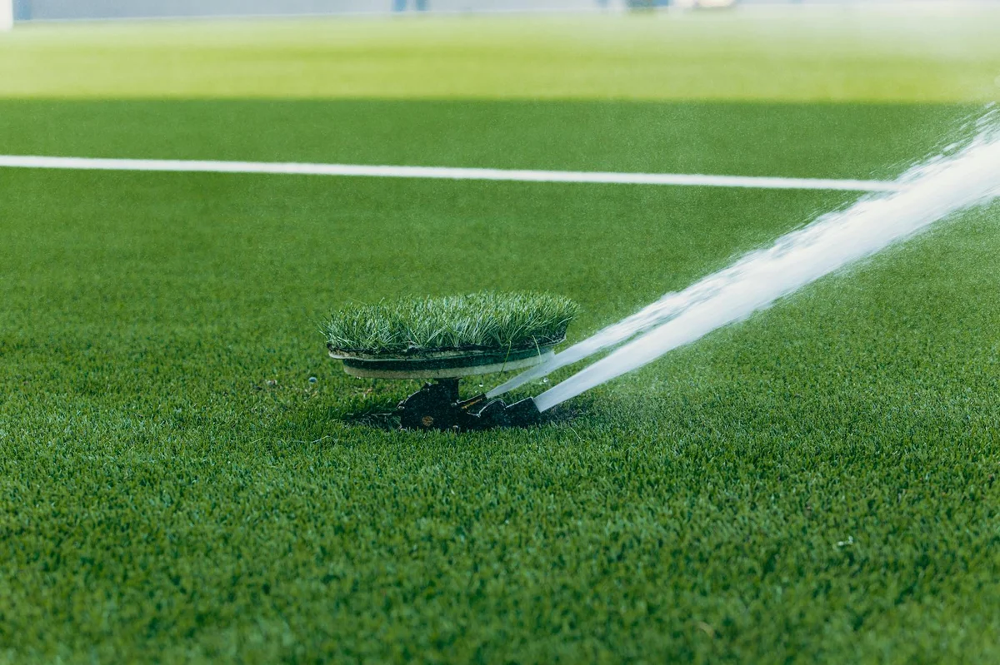

In Winnipeg, established lawns need about 1 inch of water per week — from rain or irrigation — split across two or three sessions rather than one heavy daily soaking. Here's the schedule that actually works for Manitoba's clay soil, along with the signs that tell you when to water more, when to hold back, and when your lawn is fine on its own.
Want your Winnipeg lawn set up for a healthy summer? Request a free quote and we'll put together a maintenance plan that fits your property.
How Often to Water: The Winnipeg Rule of Thumb
The basic rule for a Winnipeg lawn is 1 inch of water per week, divided into two or three sessions. Watering every two to three days is almost always better than daily light sprinkles. Here's why it matters: frequent shallow watering trains your grass to grow shallow roots. Those roots sit close to the surface, where they dry out fast and burn in summer heat. Deep, infrequent watering pushes roots down into cooler soil, where they can access moisture on their own between sessions.
A simple way to measure: place a tuna can or rain gauge in the sprinkler zone and run your system until the can holds an inch. That's your target per session if you're watering once a week, or half an inch if you're splitting across two days. Manitoba's short growing season means every week of consistent watering counts — skipping even one week during a July heat wave can stress your lawn enough to trigger dormancy.
Why Winnipeg's Clay Soil Changes Everything
Winnipeg is built on heavy Red River Valley clay. That clay is excellent at holding moisture, but it drains slowly and compacts easily after Winnipeg's freeze-thaw winters. On sandy soil, a deep watering absorbs quickly and moves through. On prairie clay, water needs more time to penetrate past the compacted top layer — which means running your sprinklers longer per session, but less frequently, gets better results than daily light passes.
Overwatering clay creates a real problem: the surface stays saturated, which cuts off oxygen to the roots and creates the warm, moist conditions that fungal diseases need. Winnipeg's humid summer evenings make things like dollar spot and brown patch more likely on lawns that never fully dry between waterings. Two deep waterings per week is the ceiling for most established Winnipeg lawns — more than that on clay, and you're working against yourself.
Winnipeg's zone 3 clay soil holds moisture far longer than most Canadian soils. Two deep sessions per week is almost always enough — daily watering is usually too much.
Not sure what your lawn actually needs this season? Get a quick quote and we'll take a look at your Winnipeg property and tell you straight.
Signs You're Watering Wrong
Over-watering and under-watering can both weaken your lawn, but they look different. Watch for these:
Signs you're watering too much:
- Water pools on the surface or runs off before soaking in
- Lawn feels spongy or mushy underfoot after watering
- Mushrooms appear in patches, or you notice yellowing with a fungal ring pattern
- Grass grows fast but looks pale, thin, and weak
Signs you're not watering enough:
- Grass turns a blue-green or dull grey colour in the afternoon
- Footprints stay visible in the lawn for more than 10 seconds
- Blades fold or wilt on hot days even in the morning
- Lawn goes tan or brown by mid-July despite some rain
A Winnipeg lawn that turns brown in summer isn't necessarily dying — grass goes dormant to protect itself in dry heat. It will bounce back when rain returns. If you want it to stay green through July and August, consistent deep watering on schedule is what keeps it that way. Our basic lawn care in Winnipeg includes watering guidance tailored to your specific yard.
The Best Time of Day to Water Your Winnipeg Lawn
Always water in the early morning — between 5 and 9 AM. Early morning watering gives grass blades time to dry before the cooler evening temperatures arrive, which cuts your risk of fungal disease significantly. It also reduces evaporation loss compared to watering in the afternoon, so more of every drop actually reaches the root zone.
Avoid evening watering in Winnipeg. Manitoba summers have enough overnight humidity that grass watered at dusk stays wet all night — exactly the conditions fungal infections need to take hold. Avoid midday watering too. When the sun is at its peak, evaporation rates are high enough that a meaningful portion of your water disappears before it ever penetrates the soil. Early morning is the only window that gets water to the roots efficiently without creating disease risk.
New Sod vs. Established Lawn — Different Rules Apply
If you've had fresh sod installed this spring, the watering schedule is completely different from an established lawn. New sod needs to be watered daily — sometimes twice a day in warm weather — for the first two to three weeks. The goal is to keep the root zone consistently moist so the new roots knit into the soil beneath the sod layer. Skipping a day during this window can kill sections before they ever establish.
After the first two to three weeks, reduce to every two or three days. By six weeks, you can treat it like any established Winnipeg lawn and shift to the twice-per-week deep-watering schedule. Our landscaping services in Winnipeg include sod installation, and we always walk homeowners through the post-install care routine before we leave the job so nothing gets skipped in those first critical weeks.
Adjusting for Rain and Dry Spells
Winnipeg weather swings between heavy spring rains and weeks-long dry stretches in July and August. When you get more than half an inch of rain in a single day, skip your next scheduled watering session and let the soil absorb what it received. Watering on top of a good rain soaking is one of the fastest ways to oversaturate clay and trigger the exact problems you're trying to avoid.
During dry spells, increase to three sessions per week rather than two. Watch the grass rather than the calendar — if your lawn is barely growing between cuts of weekly grass cutting in Winnipeg, it's a reliable signal the lawn is water-stressed. If it's growing fast and green, your schedule is working.
In early fall — after mid-September in Winnipeg — start winding the schedule down. Grass growth slows as temperatures drop and Manitoba days get shorter. One deep watering every 10 to 14 days is usually enough through October. Once overnight temperatures are consistently near freezing, stop watering entirely and let the lawn harden off for winter.
Stop Guessing — Get a Real Lawn Care Plan
Watering is just one piece of a healthy Winnipeg lawn. We service all of Winnipeg and the surrounding area — quotes are fast, free, and specific to your property.
Get a Free Quote